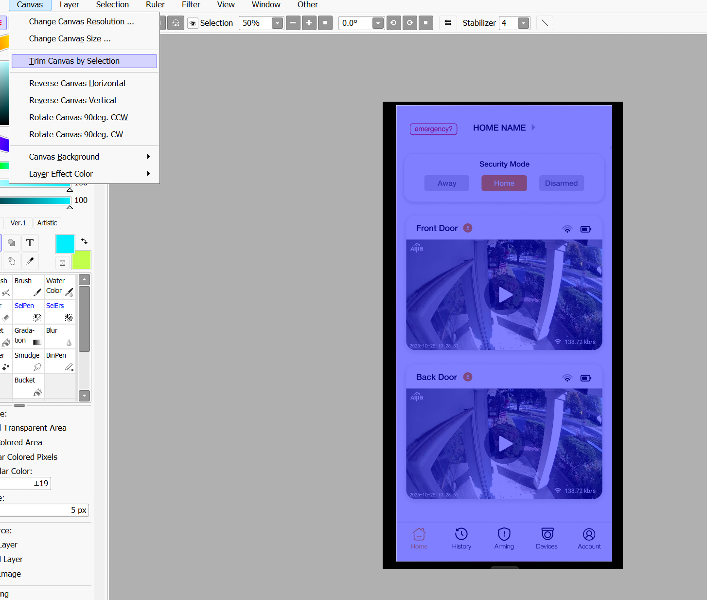

Blender Prototype Process
Sort of inspired by by the app carousels in the google play store, I wanted to make a similar scene that just shows the ideal space the app would be used; an office. Perhaps the implication is during work from home hours.

Sort of like this but imagine it.... on a DESK!
Also with the nature of 3D software I kinda just wanted to take advantage of the rendering software to render some pretty lighting- it feels like such a hack since its so simple yet dramatic.
Gathering Assets
So I wasn't actually sure if we were allowed to just rip everything from sketchfab which is why I turned this in late. I would've been kind of embarassed if I just turned in something completely unacceptable. Glad it was actually expected!
The first steps I took was simply finding the assets I wanted online starting with a desk. Here's the simple desk I found that suited the realistic style I wanted to render.

Naturally, I needed an office chair after this.

A lovely laptop to put on the desk!

And lastly, the most important- a phone to show my prototype on!

Look how nice and shiny it is! Let's get to assembling.
Simple Assembly
This was actually kinda confusing cause I couldn't figure out how to import the desk as a blend file without looking the texture. Figured it out in class, but using the .gltf file is much more convenient anyway...

Ok so desk and chair. Now we need some simple walls and a window

Drawn arrow is the angle of light I want, so that half the light hits the phone. I just think it would be pretty (and simple)

I slap that laptop on the desk. I dunno if its actually flush or clipping the desk. To be honest, it doesn't really matter.

Put the iphone down at a sort of natural angle.
I don't know what's up with the gltf files, but they are a bit strange to move around in blender. I didn't figure out for a while that I need to select hierarchy- shouldn't selecting the parent just select everything? I dunno.
I end up putting them all in individual collections just to manage them.
Finishing Adjustments
I add an emission to the iphone, cause it's a screen and it glows.

I dunno how to save a figma as a png so I take a screenshot and crop it in paint tool sai. I feel like a caveman...

And oh my god, I realize I designed my protoype on a Samsung. Ok so I switch phone models. Beautiful Samsung Galaxy 22 Ultra.(I want this phone...)

I also go ahead and fix the scale, as the iphone was actually huge, and the samsung is actually bigger. More realistic size comparison.

Fix the UV mapping. Surprisingly easy, wonder if there's a way to get everything to snap perfectly or if all textures are freehand like this.

Render setup and adjusting the light just right...

Set to render. Does the ETA say it's going to take a whole day? I actually think it is!